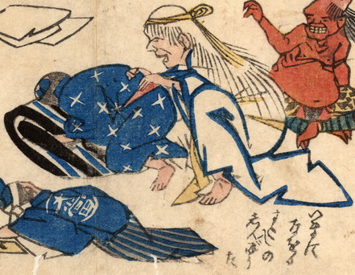

女の亡者。白髪を垂らし、黄色い鉢巻きを締めている。白い着物を着て、しゃがみ、屈み込んでいる男の腰をさすっている。亡者の後ろに赤い肌の鬼がいる。
出典：親書誌：U426_nichibunken_0170：地震冥途ノ図；ジシンメイドノズ／日付：2010／資源識別子：U426_nichibunken_0170_0005_0000
Copyright (c)2010- International Research Center for Japanese Studies, Kyoto, Japan. All rights reserved.